Фотографии: было и стало
Те же 19 фотографий врачей и московских клиник. Размеры и кадрирование сохранены; исходные файлы остаются на месте.
Полноразмерные копии: 6,67 → 1,44 МБ, уменьшение на 78,48%.
Ярмамедов Дмитрий Муталифович

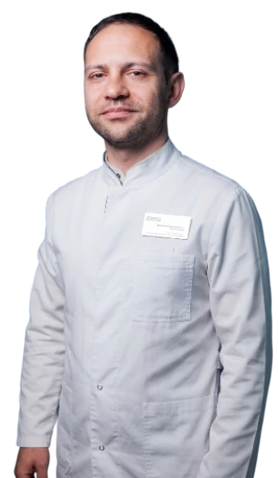
Барышникова Дарья Андреевна

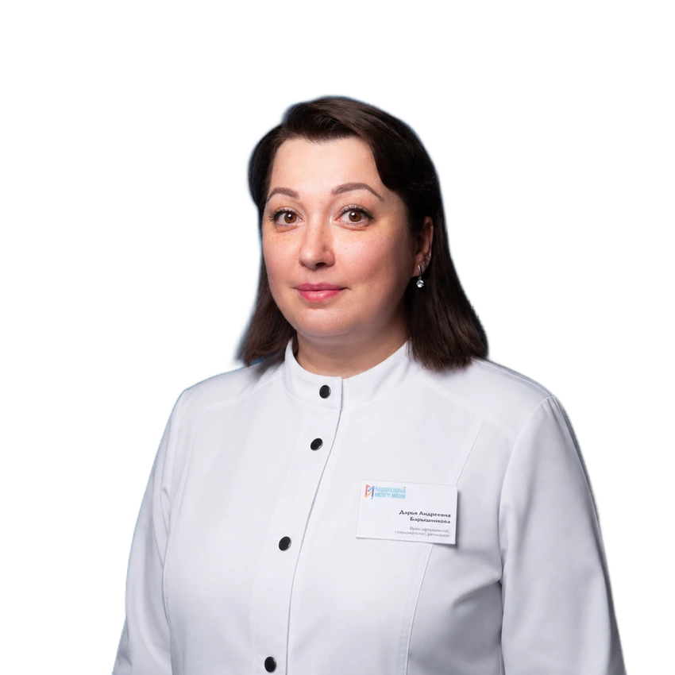
Мягков Даниил Александрович

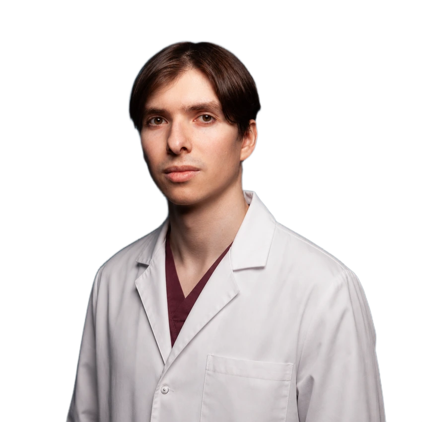
Долгополова Оксана Александровна

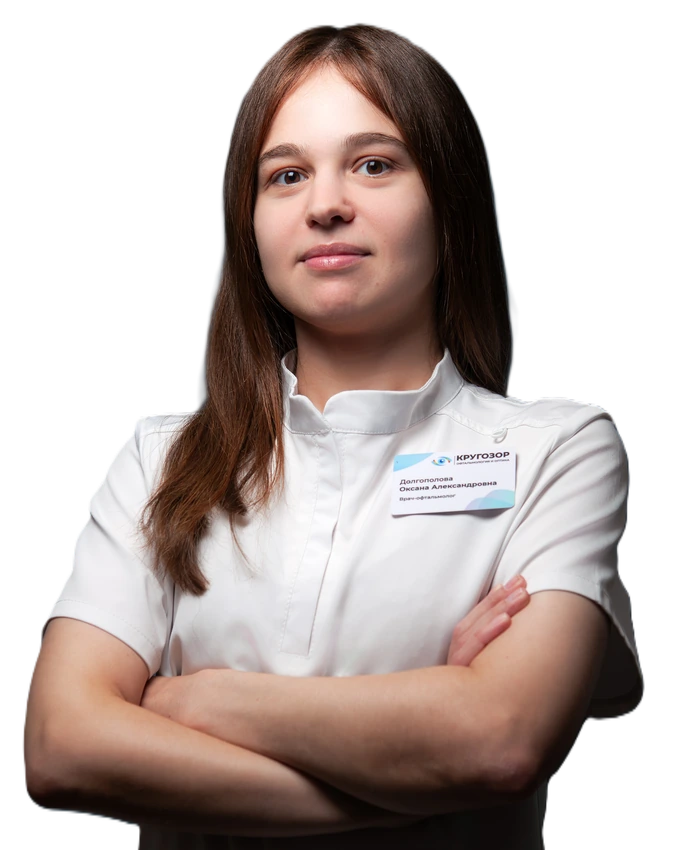
Боброва Ольга Валерьевна

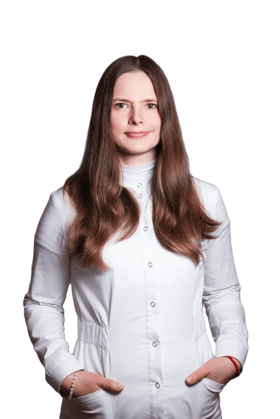
Тринько Владимир Александрович

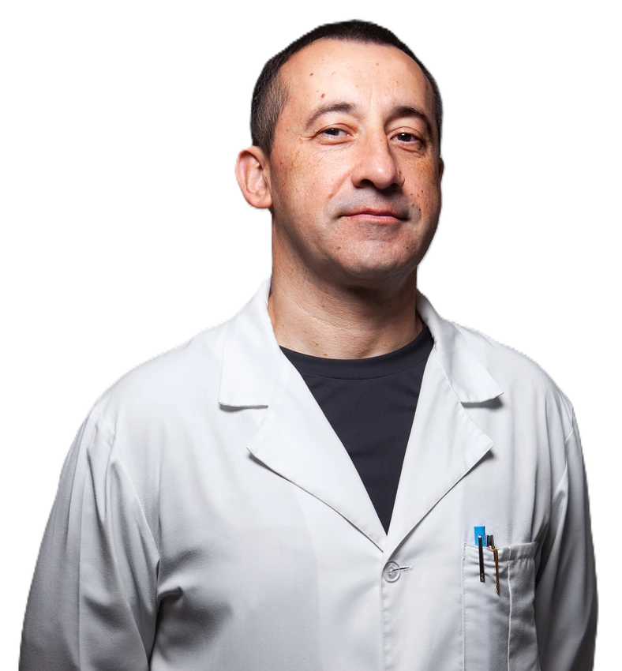
Игнатова Наталия Владимировна

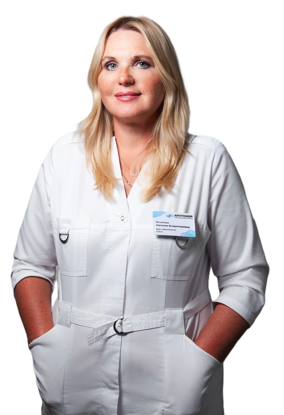
Петрова Оксана Анатольевна

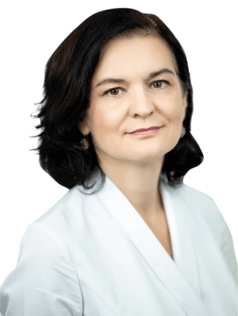
Онучина Анна Алексеевна

Мягков Александр Владимирович

Кащенко Марина Андреевна

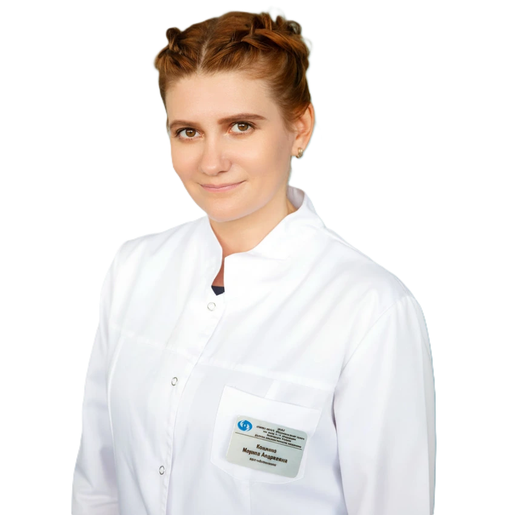
Саловарова Елена Павловна

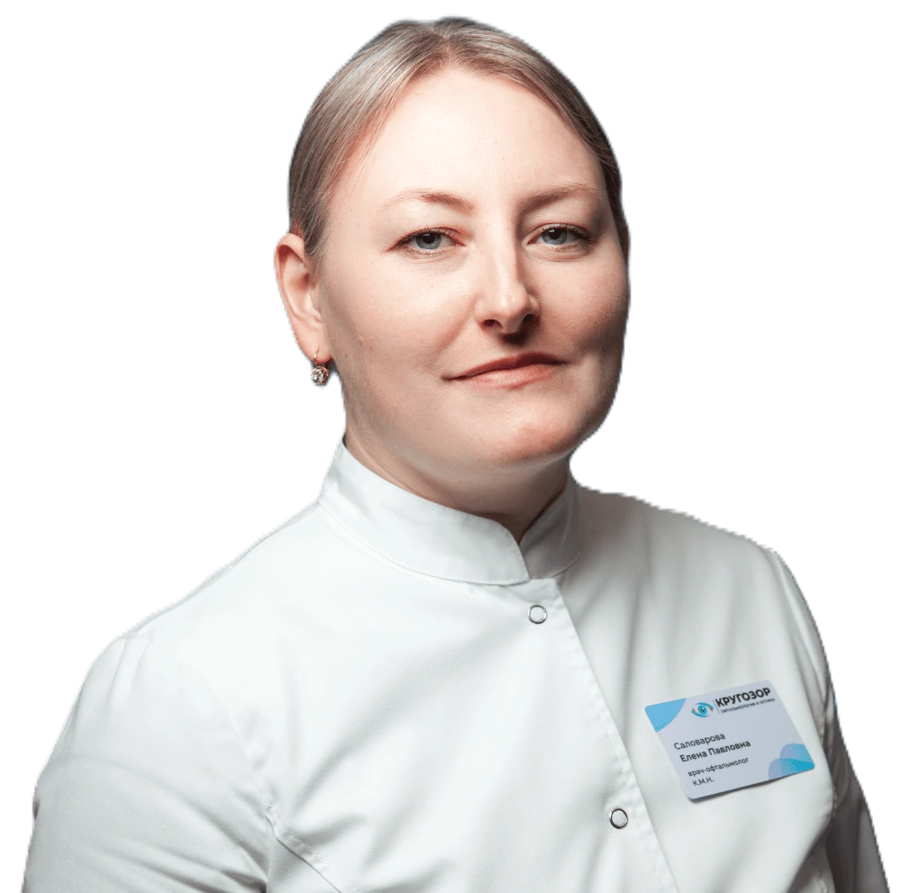
Сакулина Светлана Сергеевна

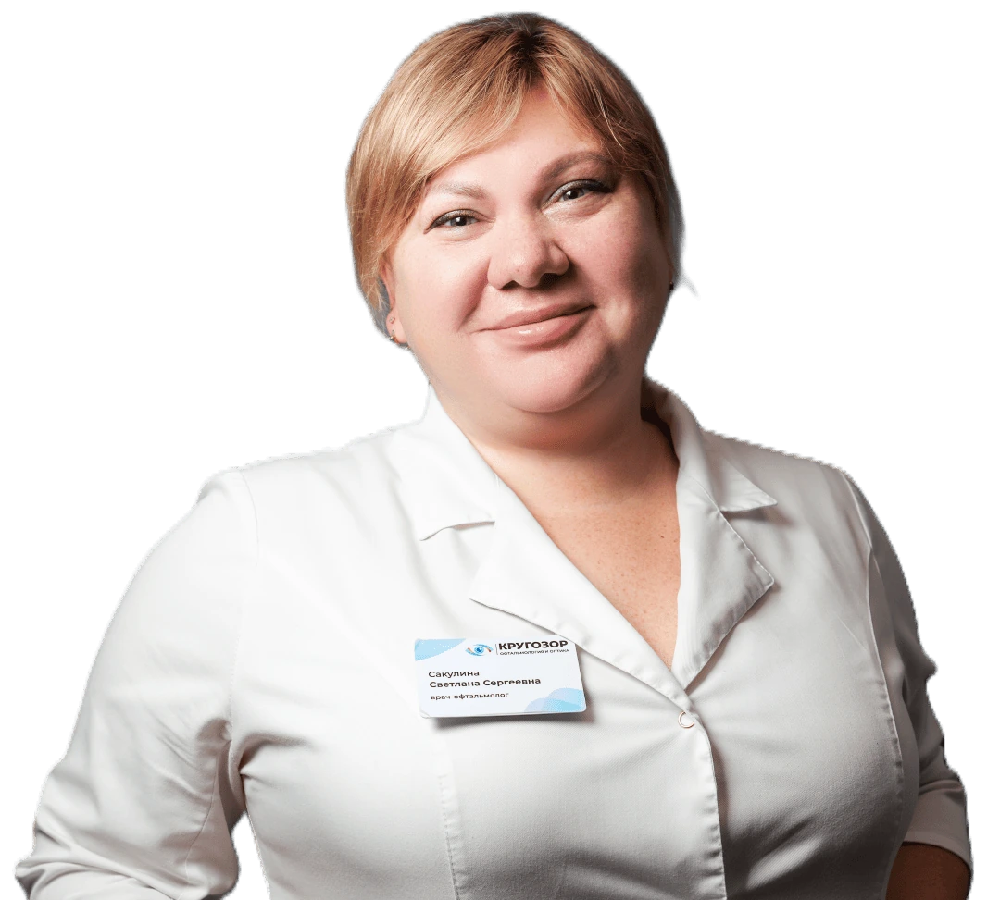
Клиника на Дегунинской

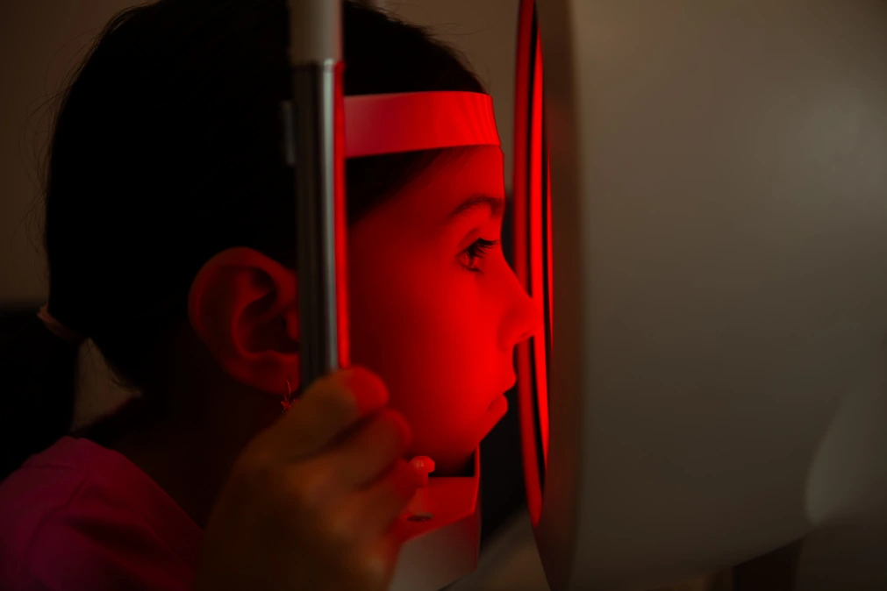
Клиника на Дегунинской

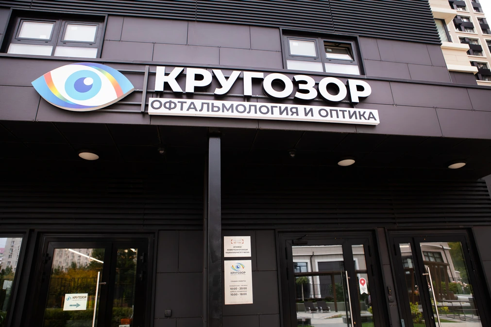
Клиника на Дегунинской

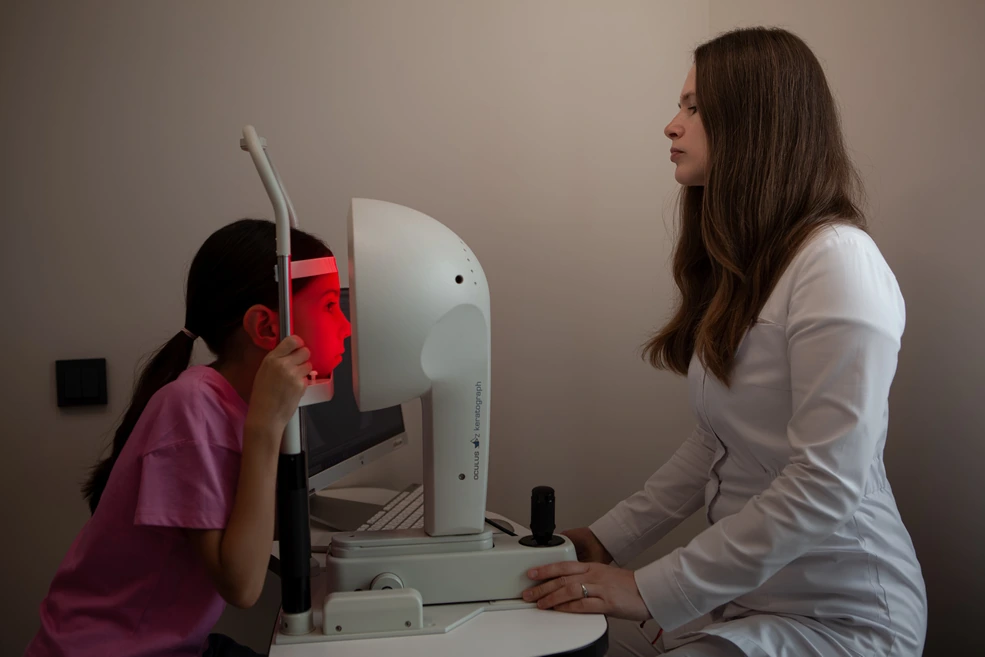
Клиника на Люсиновской

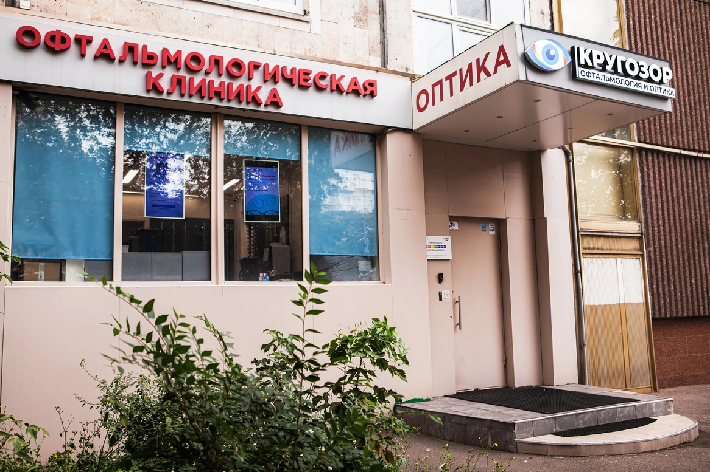
Клиника на Люсиновской

Клиника на Люсиновской

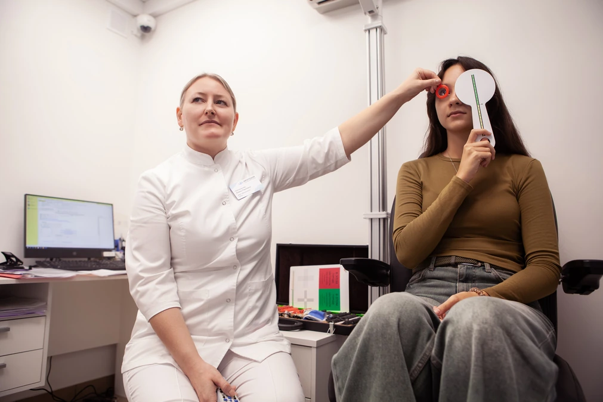